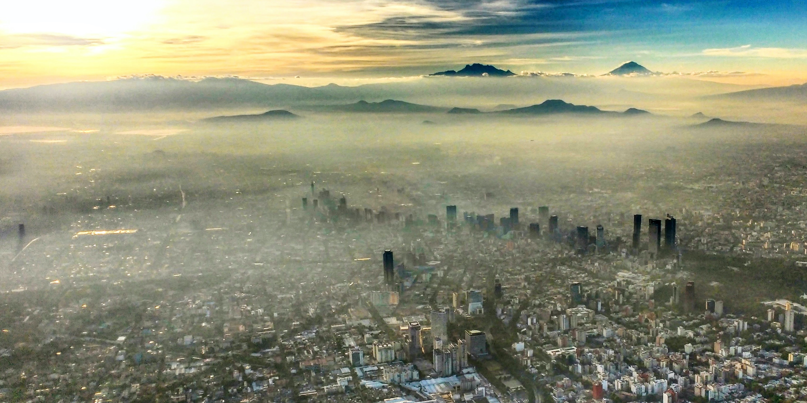
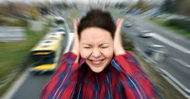
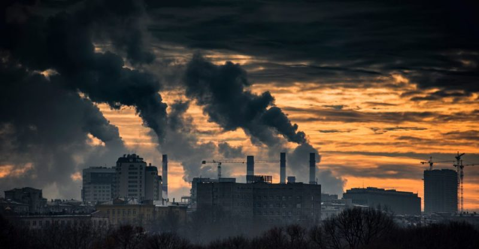

¿Por qué EcoEco?
Procede de "Ecología" dado que la contaminación rompe el equilibrio de la misma y "Eco" del sonido
Saber más¿Qué es la contaminación?

La contaminación es la introducción en el medio ambiente de sustancias o formas de energía que resultan perjudiciales para los seres vivos y los ecosistemas. Está causada principalmente por actividades humanas como la industria, el transporte o la mala gestión de los residuos. Existen muchos tipos de contaminación (del aire, del agua, del suelo, acústica, lumínica, entre otras) que deterioran la calidad de vida y contribuyen a problemas globales como el cambio climático. En esta página nos centraremos en dos formas muy presentes en las ciudades: contaminación atmosférica y la contaminación acústica.
Contaminación Atmosférica
¿Qué es?
Es la presencia en el aire de sustancias, partículas o formas de energía que alteran su composición natural, lo que puede generar riesgos, daños o molestias graves para las personas, los seres vivos y el medio ambiente.
Principales causas
- Transporte: Emisiones de coches, camiones y aviones.
- Industria: Humos de fábricas y centrales eléctricas.
- Agricultura: Uso de fertilizantes y metano ganadero.
- Residuos: Quema de basura y gases de vertederos.
- Energía: Calefacción y consumo doméstico de carbón o gas.
- Naturales: Volcanes, incendios y tormentas de polvo.
Mapa global de contaminación atmosférica
¿Cómo podemos ayudar?
Movilidad Activa
Caminar o usar la bicicleta para trayectos cortos evita el uso del coche, reduciendo las emisiones de humos y gases nocivos directamente en tu barrio.
Consumo Local
Comprar productos fabricados cerca de casa evita que camiones y barcos recorran miles de kilómetros, disminuyendo la contaminación del transporte.
Ahorro Energético
Apagar las luces y desenchufar aparatos que no usas reduce la demanda de electricidad, lo que significa que las centrales queman menos combustible fósil.
¡EVITEMOS ESTO!



Contaminación Acústica
¿Qué es?
Es el exceso de ruido o vibraciones en el ambiente que resulta molesto o dañino para las personas, sus actividades o el medio ambiente. En la práctica, es cualquier sonido no deseado o demasiado intenso que altera las condiciones normales de un lugar, como ocurre con el tráfico, obras o industrias en las ciudades.
Principales causas
- Transporte: Tráfico de coches, motos, camiones, trenes y aviones.
- Construcción: Obras, demolición y uso de maquinaria pesada.
- Industria: Funcionamiento de fábricas, talleres y grandes máquinas.
- Entorno urbano: Calles muy transitadas, sirenas, bocinas y altavoces en espacios públicos.
- Hogar y barrio: Vecindario ruidoso, electrodomésticos, fiestas y música alta en casas.
Escala de Impacto Acústico
Comparativa de decibelios (dB) y su efecto en la salud auditiva según la OMS.
¿Cómo podemos ayudar?
Movilidad silenciosa
Caminar, ir en bici o usar transporte público en vez del coche reduce el ruido del tráfico en calles y barrios, haciendo el entorno más tranquilo para todos.
Ocio y convivencia responsable
Bajar el volumen de la música, no gritar en la calle y respetar los horarios de descanso evita molestias a vecinos y reduce el ruido constante en zonas residenciales.
Hogar más silencioso
Usar electrodomésticos ruidosos en horario diurno, mantener bajo el volumen de la televisión y aislar mejor ventanas o paredes ayuda a disminuir el ruido que generamos y el que nos llega.